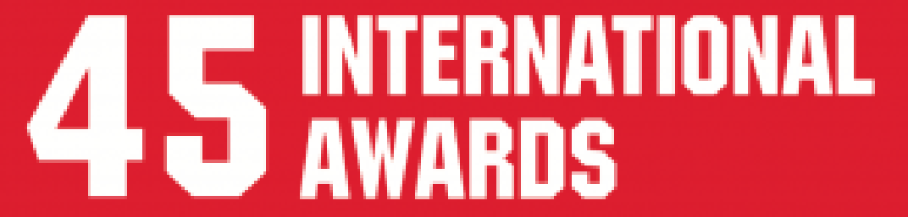

45 International Awards

Simbah Digital Farmer, Winner, 2018
Asia-Pacific Youth Leadership, Innovation and Entrepreneurship SDGs Startup Awards di
Beijing,China-Mujiyanto
Fishgator, Gold Medal di World
Invention Creativity Olympic (WICO) Award 2018 in Seoul, South Korea
Awardee, Australia Award Star-Up
Ecosystem, 2018, Australia
Silver Medal, Thailand Robotic
Competition, 2018, Thailand.
3th Place, IIUM Robotic Competition,
2018, Malaysia
Finalist, ASIA Hardware Battle,
2018
Battle of Surabaya (November 10th),
Best Animation,Hollywood International Motion Pictures Film Festival 2018
November 10th (Battle Of Surabaya),
Best Animation Feature, Glendale international film festival 2018 Battle of Surabaya (November 10th), Best Animation Film,
European Cinematography Awards, 2018
Battle of Surabaya (November 10th),
Best Animation, Amsterdam International Film Festival 2018
Battle of Surabaya (November 10th),
Nominee Best Film, Amsterdam International Film Festival 2018
Battle of Surabaya (November 10th),
Nominee Best Sound Design, Amsterdam International Film Festival 2018
Battle of Surabaya (November 10th),
Best Animation,London, Gold Movie Awards 2018
Battle of Surabaya (November 10th),
Best Animation,Oniros Film Awards 2018
Battle of Surabaya (November 10th),
Outstanding Achievement Award – Animated Film, Calcutta International Cult Film Festival
2018.
Battle of Surabaya (November 10th),
Best Animation Feature Film, Shouthern Cone International Film Festival 2018
Battle of Surabaya (November 10th),
Best Animation, Festival International De Cine Del Cono Sur, 2018
Battle of Surabaya (November 10th),
Best Animation, Venezuela, Ficocc Five Continents International Film Festival 2018
Battle of Surabaya (November 10th),
Best Writer ,Toronto, ATFF SPRING Film Festival 2018
Battle of Surabaya (November 10th),
Nominee Best Animation, London International Film Festival 2018
Battle of Surabaya (November 10th),
Nominee Best Original Screenplay, of A Feature Film, London International Film Festival
2018
Battle of Surabaya (November 10th),
Nominee Best Editing, of A Feature Film, London International Film Festival 2018
Gablind, Merit Winner Asia Pacific
IICT Award, Dhaka, 2017 – Jeki Kuswanto, Eko Rahmat Slamet Hidayat, Arvin C Frobenius
Fishtron, Second Merit Winner Asia
Pacific IICT Award, Dhaka, 2017 – Donni Prabowo, Yudhis Tiro Kabul Y.
AmikomOC, Second Winner,
Leaderboard Rookie Rumble 43, April 30, 2017- AmikomOC
Supermiko, Fourth Winner,
Leaderboard Rookie Rumble 42, April 2, 2017- Miko Kastomo Putro.
Supermiko, Second Winner,
Leaderboard Rookie Rumble 41, March 15, 2017- Miko Kastomo Putro.n
HICO, Nominee, The use of ICTs in
education for disadvantaged groups, UNESCO 2017.-Donni Prabowo, Pendi Ventri Hendika, Bety Wulan
Sari
Ahada, Nominee, The use of ICTs in
education for disadvantaged groups, UNESCO 2017 – Donni Prabowo, Afif Bimantara, Bram
Pratowo
BTOUCH, Nominee, The use of ICTs in
education for disadvantaged groups, UNESCO 2017.- Elik Hari Muktafin, Budi Sulistiyo Jati,
Heriyanto
Gablind, Bronze Asia SMAR APP
Award, Hongkong, 2017 – Jeki Kuswanto, Eko Rahmat Slamet Hidayat, Arvin C Frobenius
Battle of Surabaya (November 10th),
Best Animation, Milan International Film Festival 2017-M.Suyanto, Aryanto Yuniawan, Adi Djayusman,
Lukman Chandra, Heri Sulistyo
Battle of Surabaya (November 10th),
Best Animation,Berlin International Film Festival 2017-M.Suyanto, Aryanto Yuniawan, Adi Djayusman,
Lukman Chandra, Heri Sulistyo
Battle of Surabaya (November 10th),
Best Animation, Nice International Film Festival 2017-M.Suyanto, Aryanto Yuniawan, Adi Djayusman,
Lukman Chandra, Heri Sulistyo
Battle of Surabaya (November 10th),
Gold Remi Award, Worldfest, Houston, International Film Festival 2016-M.Suyanto, Aryanto Yuniawan,
Adi Djayusman, Lukman Chandra, Heri Sulistyo
Battle of Surabaya (November 10th),
Grandprize Winner, SICAF 2016, The 20th Seoul International Cartoon & Animation Festival –
M.Suyanto, Aryanto Yuniawan, Adi Djayusman, Lukman Chandra, Heri Sulistyo
Battle of Surabaya (November 10th),
Winner Best Animation, 3th Noida International Film Festival 2016 – M.Suyanto, Aryanto Yuniawan, Adi
Djayusman, Lukman Chandra, Heri Sulistyo.
Gablind, Nominee International ICT
Innovative Service Contest, Taiwan, 2016 – Jeki Kuswanto, Eko Rahmat Slamet Hidayat, Arvin C
Frobenius
BSmart, Nominee Asia Pacific ICT
Award, Taiwan, 2016 – Elik Hari Muktafin, Budi Sulistiyo Jati, Heriyanto
Gablind, Nominee Asia Pacific ICT
Award, Taiwan, 2016 - Jeki Kuswanto, Eko Rahmat Slamet Hidayat, Arvin C Frobenius
Battle of Surabaya (November 10th),
Official Selection, Holland Animation Film Festival 2016 – M.Suyanto, Aryanto Yuniawan, Adi
Djayusman, Lukman Chandra, Heri Sulistyo.
Battle of Surabaya (November 10th),
Official Selection, Animation Dingle, Ireland 2016 – M.Suyanto, Aryanto Yuniawan, Adi Djayusman,
Lukman Chandra, Heri Sulistyo.s
Battle of Surabaya (November 10th),
Special Screening, New Chitose Airport Animation Festival Japan, 2016 – M.Suyanto, Aryanto Yuniawan,
Adi Djayusman, Lukman Chandra, Heri Sulistyo.
Battle of Surabaya (November 10th),
Special Screening, Athens Animfest, Greece, 2016 – M.Suyanto, Aryanto Yuniawan, Adi Djayusman,
Lukman Chandra, Heri Sulistyo.
HICO, Nominee Asia Pacific ICT
Award, Srilangka, 2015 – Donni Prabowo, Pendi Ventri Hendika, Bety Wulan Sari
BToucht, Nominee Asia Pacific ICT
Award, Srilangka, 2015 – Elik Hari Muktafin, Budi Sulistiyo Jati, Heriyanto
Battle of Surabaya (November 10th),
The Faces of Indonesia Cinema Today, 10th Jogja NETPAC Asian Film Festival 2015 – M.Suyanto, Aryanto
Yuniawan, Adi Djayusman, Lukman Chandra, Heri Sulistyo.
Battle of Surabaya (November 10th),
Nominated for Best Foreign Animation/Family Trailer Award (2014) – M.Suyanto, Aryanto Yuniawan, Adi
Djayusman, Lukman Chandra, Heri Sulistyo
AHADA, Nominees @ Asia Pacific ICT
Alliance (APICTA) Awards, Jakarta 2014 – Donni Prabowo, Afif Bimantara, Bram Pratowo
Finalist Grand Final Master
Overclocking Arena (MOA), Taiwan, 2014 – Christi Roderto R.S
Winner of Asia-Pasific Class A,
Master Overclocking Arena (MOA), Jakarta, 2014 – Christi Roderto R.S
Winner of International Movie
Trailer Festival (IMTF) 2013 – M.Suyanto, Aryanto Yuniawan, Adi Djayusman, Lukman Chandra, Heri
Sulistyo
AHADA, Nominees @ Asia Pacific ICT
Alliance (APICTA) Awards,Hongkong 2013 – Donni Prabowo, Afif Bimantara, Bram Pratowo
SHAND, Nominee International ICT
Innovative Service Contest, Taiwan, 2012.- Nuruddin Miranda, Donni Prabowo, Afif Bimantara
The Winner of The Best Websites
Tourism Promotion Organization Asia Pacific Cities, Beijing, China 2011.
Airport
Airpot Safety, Nominees Asia
Pacific ICT Alliance (APICTA) Awards 2011- Hanafi
Ad@hand, Nominees Asia Pacific ICT
Alliance (APICTA) Awards 2011- Hanafi
The Best e-Practice Asia Pacific
Economic Digital Opportunity Center Award (ADOC) Award – Arief Setyanto, S.Si, MT
The Best e-Practice Asia Pacific
Economic Digital Opportunity Center Award (ADOC) Award – Kusrini, Dr., M.Kom
V-Track, Nominees @ Asia Pacific
ICT Alliance (APICTA) Awards, Melbourne, Australia 2009 – Andi Sunyoto
Tiwule, Nominees @ Asia Pacific ICT
Award Alliance (APICTA), Melbourne,Australia 2009 – Hendro Wibowo
Merit award @ Asia Pacific ICT
Alliance (APICTA) Awards,Macau, 2006 – Hanif Al Fatta
Award3
Nominees of Urban Animation
International Festival – M. Suyanto, Prof. Dr, M.M. and Aryanto Yuniawan, A.Md
Merit award @ Asia Pacific ICT
Alliance (APICTA) Awards, Macau 2006- Arief Setyantos
The Winner of Oto Web Contest,
Sumitomo Corporation 2006 – Jaeni
The Best e-Practices Asia Pacific
Economic Digital Opportunity Center (ADOC) Award,2006 – Kusrini
The Best e-Practices Asia Pacific
Economic Digital Opportunity Center (ADOC) Award,2006 – Arief Setyanto
Winner ASEAN Development Citra
Award -2005, M. Suyanto
The Winner of Techscape Anniversary
Web Contest, 2004 – Jaeni
Copyright 2019 © Universitas AMIKOM Yogyakarta - All Right Reserved